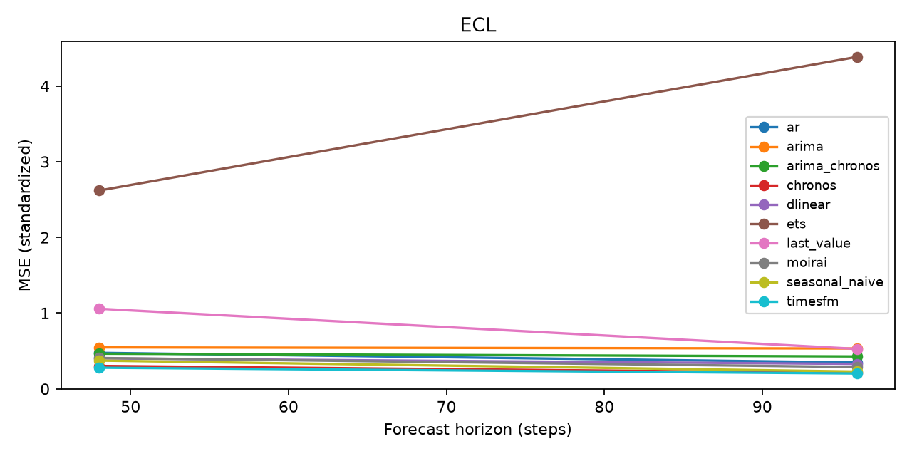
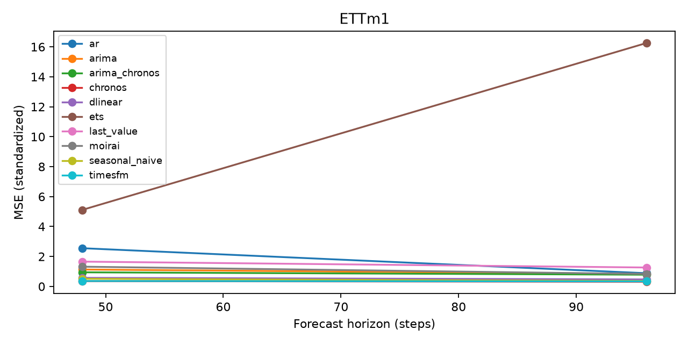
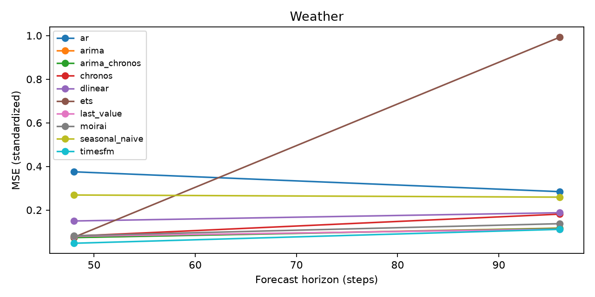

Run: pilot. Status: completed. Protocol: common.
MSE/MAE: train-standardized units. *_raw: original units. MASE: seasonal train scale. Coverage: nominal 80%. Hybrid intervals describe residual uncertainty conditional on the base point. Pilot/subset runs do not establish paper reproduction.
| dataset | model | horizon | seed | pilot | n_origins | mse | mae | mase | coverage_80 | width_80 | prediction_seconds | selection_seconds | peak_rss_mb | arima_nonconverged_fits |
|---|---|---|---|---|---|---|---|---|---|---|---|---|---|---|
| ETTm1 | last_value | 48 | 0 | True | 8 | 1.65773 | 0.787691 | 1.94131 | NaN | NaN | 2e-05 | 0.0033228 | 251.863 | 0 |
| ETTm1 | seasonal_naive | 48 | 0 | True | 8 | 0.512646 | 0.507241 | 1.25286 | NaN | NaN | 3.7e-05 | 0.0011652 | 252.066 | 0 |
| ETTm1 | ar | 48 | 0 | True | 8 | 2.55453 | 0.939153 | 2.31175 | NaN | NaN | 0.0003135 | 0.0029342 | 252.297 | 0 |
| ETTm1 | arima | 48 | 0 | True | 8 | 1.13076 | 0.703755 | 1.73402 | NaN | NaN | 0.413193 | 1.04235 | 316.527 | 0 |
| ETTm1 | ets | 48 | 0 | True | 8 | 5.10873 | 1.32326 | 3.26076 | NaN | NaN | 0.161608 | 0.174142 | 317.094 | 0 |
| ETTm1 | dlinear | 48 | 0 | True | 8 | 0.575825 | 0.586585 | 1.44646 | NaN | NaN | 0.0002793 | 0.858908 | 394.18 | 0 |
| ETTm1 | chronos | 48 | 0 | True | 8 | 0.35503 | 0.425279 | 1.04982 | 0.66276 | 0.978891 | 0.0130215 | 0.879088 | 467.844 | 0 |
| ETTm1 | arima_chronos | 48 | 0 | True | 8 | 0.943662 | 0.64013 | 1.57755 | 0.342448 | 0.522932 | 0.467679 | 0.439051 | 468.613 | 0 |
| ETTm1 | last_value | 96 | 0 | True | 8 | 1.26473 | 0.719042 | 1.77551 | NaN | NaN | 1.39e-05 | 0.00129 | 468.73 | 0 |
| ETTm1 | seasonal_naive | 96 | 0 | True | 8 | 0.366473 | 0.400741 | 0.990144 | NaN | NaN | 2.48e-05 | 0.0013027 | 468.773 | 0 |
| ETTm1 | ar | 96 | 0 | True | 8 | 0.88327 | 0.662893 | 1.6339 | NaN | NaN | 0.0004882 | 0.0037761 | 469.25 | 0 |
| ETTm1 | arima | 96 | 0 | True | 8 | 0.834634 | 0.645416 | 1.59138 | NaN | NaN | 0.487365 | 0.596487 | 469.293 | 0 |
| ETTm1 | ets | 96 | 0 | True | 8 | 16.2633 | 2.59247 | 6.39196 | NaN | NaN | 0.165154 | 0.164103 | 469.312 | 0 |
| ETTm1 | dlinear | 96 | 0 | True | 8 | 0.469967 | 0.51757 | 1.2767 | NaN | NaN | 0.0002995 | 0.142093 | 469.355 | 0 |
| ETTm1 | chronos | 96 | 0 | True | 8 | 0.313801 | 0.355011 | 0.876408 | 0.772135 | 1.0736 | 0.16006 | 0.145787 | 533.859 | 0 |
| ETTm1 | arima_chronos | 96 | 0 | True | 8 | 0.784189 | 0.628527 | 1.54998 | 0.297526 | 0.545234 | 0.67783 | 0.521689 | 532.984 | 0 |
| Weather | last_value | 48 | 0 | True | 8 | 0.0797193 | 0.204692 | 0.489831 | NaN | NaN | 1.81e-05 | 0.0015807 | 488.473 | 0 |
| Weather | seasonal_naive | 48 | 0 | True | 8 | 0.268855 | 0.36313 | 0.807263 | NaN | NaN | 2.66e-05 | 0.0012412 | 488.473 | 0 |
| Weather | ar | 48 | 0 | True | 8 | 0.37524 | 0.296209 | 0.711165 | NaN | NaN | 0.0003472 | 0.0033837 | 488.641 | 0 |
| Weather | arima | 48 | 0 | True | 8 | 0.0743675 | 0.194777 | 0.466345 | NaN | NaN | 0.268619 | 1.13823 | 488.785 | 1 |
| Weather | ets | 48 | 0 | True | 8 | 0.0748876 | 0.174856 | 0.425514 | NaN | NaN | 0.181628 | 0.18403 | 488.809 | 0 |
| Weather | dlinear | 48 | 0 | True | 8 | 0.149712 | 0.28561 | 0.658081 | NaN | NaN | 0.0003967 | 0.181586 | 490.699 | 0 |
| Weather | chronos | 48 | 0 | True | 8 | 0.0804325 | 0.192323 | 0.462422 | 0.617188 | 0.385785 | 0.0187248 | 0.023226 | 495.031 | 0 |
| Weather | arima_chronos | 48 | 0 | True | 8 | 0.0734318 | 0.193343 | 0.462753 | 0.0846354 | 0.0303341 | 0.379389 | 0.460737 | 495.031 | 0 |
| Weather | last_value | 96 | 0 | True | 8 | 0.112322 | 0.257465 | 0.59278 | NaN | NaN | 2.35e-05 | 0.0019998 | 495.035 | 0 |
| Weather | seasonal_naive | 96 | 0 | True | 8 | 0.258987 | 0.367411 | 0.807573 | NaN | NaN | 3.35e-05 | 0.0014825 | 495.066 | 0 |
| Weather | ar | 96 | 0 | True | 8 | 0.284256 | 0.374723 | 0.854911 | NaN | NaN | 0.000525 | 0.003849 | 495.074 | 0 |
| Weather | arima | 96 | 0 | True | 8 | 0.116751 | 0.263144 | 0.603958 | NaN | NaN | 0.444096 | 1.6969 | 495.082 | 6 |
| Weather | ets | 96 | 0 | True | 8 | 0.992225 | 0.580244 | 1.42194 | NaN | NaN | 0.199225 | 0.202273 | 495.102 | 0 |
| Weather | dlinear | 96 | 0 | True | 8 | 0.187572 | 0.313492 | 0.704428 | NaN | NaN | 0.0002578 | 0.196894 | 495.102 | 0 |
| Weather | chronos | 96 | 0 | True | 8 | 0.181049 | 0.2987 | 0.705676 | 0.515625 | 0.504282 | 0.18007 | 0.193088 | 537.355 | 0 |
| Weather | arima_chronos | 96 | 0 | True | 8 | 0.115692 | 0.262023 | 0.601435 | 0.0859375 | 0.0322553 | 0.572446 | 0.492642 | 538.719 | 0 |
| ECL | last_value | 48 | 0 | True | 8 | 1.05804 | 0.585264 | 1.58942 | NaN | NaN | 2.36e-05 | 0.001441 | 490.031 | 0 |
| ECL | seasonal_naive | 48 | 0 | True | 8 | 0.373639 | 0.264799 | 0.729224 | NaN | NaN | 3.04e-05 | 0.0014567 | 490.031 | 0 |
| ECL | ar | 48 | 0 | True | 8 | 0.475769 | 0.393816 | 1.09734 | NaN | NaN | 0.0005315 | 0.0045278 | 490.031 | 0 |
| ECL | arima | 48 | 0 | True | 8 | 0.546923 | 0.476023 | 1.32992 | NaN | NaN | 0.336709 | 0.688939 | 490.102 | 1 |
| ECL | ets | 48 | 0 | True | 8 | 2.6184 | 0.822028 | 2.2179 | NaN | NaN | 0.192031 | 0.199823 | 490.102 | 0 |
| ECL | dlinear | 48 | 0 | True | 8 | 0.402904 | 0.356532 | 1.00358 | NaN | NaN | 0.0002887 | 0.136504 | 491.793 | 0 |
| ECL | chronos | 48 | 0 | True | 8 | 0.302914 | 0.229972 | 0.635242 | 0.820312 | 0.570155 | 0.0188175 | 0.0197135 | 494.129 | 0 |
| ECL | arima_chronos | 48 | 0 | True | 8 | 0.464561 | 0.414613 | 1.1547 | 0.476562 | 0.470138 | 0.339245 | 0.311565 | 494.594 | 0 |
| ECL | last_value | 96 | 0 | True | 8 | 0.527794 | 0.460471 | 1.26905 | NaN | NaN | 1.9e-05 | 0.0014933 | 494.613 | 0 |
| ECL | seasonal_naive | 96 | 0 | True | 8 | 0.228938 | 0.221659 | 0.623032 | NaN | NaN | 2.92e-05 | 0.0013059 | 494.621 | 0 |
| ECL | ar | 96 | 0 | True | 8 | 0.348555 | 0.357691 | 1.00817 | NaN | NaN | 0.0004993 | 0.0041671 | 494.621 | 0 |
| ECL | arima | 96 | 0 | True | 8 | 0.533318 | 0.488015 | 1.38007 | NaN | NaN | 0.275454 | 0.499968 | 494.625 | 1 |
| ECL | ets | 96 | 0 | True | 8 | 4.38336 | 0.884733 | 2.40799 | NaN | NaN | 0.188303 | 0.182844 | 494.648 | 0 |
| ECL | dlinear | 96 | 0 | True | 8 | 0.329628 | 0.353379 | 1.00387 | NaN | NaN | 0.0002991 | 0.158138 | 494.844 | 0 |
| ECL | chronos | 96 | 0 | True | 8 | 0.21158 | 0.208577 | 0.588333 | 0.768229 | 0.549996 | 0.162034 | 0.156111 | 535.316 | 0 |
| ECL | arima_chronos | 96 | 0 | True | 8 | 0.428316 | 0.424815 | 1.20173 | 0.457031 | 0.450136 | 0.469175 | 0.487831 | 540.664 | 0 |
| ETTm1 | timesfm | 48 | 0 | True | 8 | 0.361188 | 0.418574 | 1.03365 | 0.729167 | 1.26392 | 0.65303 | 1.38849 | 1988.26 | 0 |
| ETTm1 | timesfm | 96 | 0 | True | 8 | 0.338101 | 0.38823 | 0.958576 | 0.76888 | 1.17643 | 0.715594 | 0.750298 | 1202.93 | 0 |
| Weather | timesfm | 48 | 0 | True | 8 | 0.0474784 | 0.152607 | 0.362018 | 0.626302 | 0.313277 | 0.753512 | 0.729214 | 1210.08 | 0 |
| Weather | timesfm | 96 | 0 | True | 8 | 0.111299 | 0.237774 | 0.539159 | 0.60026 | 0.451132 | 0.727624 | 0.73966 | 1208.3 | 0 |
| ECL | timesfm | 48 | 0 | True | 8 | 0.279424 | 0.207835 | 0.575987 | 0.848958 | 0.545402 | 0.719755 | 0.783499 | 1206.43 | 0 |
| ECL | timesfm | 96 | 0 | True | 8 | 0.203124 | 0.193075 | 0.545653 | 0.809245 | 0.556262 | 0.736348 | 0.70464 | 1206.53 | 0 |
| ETTm1 | moirai | 48 | 0 | True | 8 | 1.31975 | 0.772005 | 1.90264 | 0.71224 | 1.91096 | 0.436947 | 1.8424 | 517.781 | 0 |
| ETTm1 | moirai | 96 | 0 | True | 8 | 0.83201 | 0.588931 | 1.45371 | 0.876953 | 2.45553 | 0.474037 | 0.478506 | 534.758 | 0 |
| Weather | moirai | 48 | 0 | True | 8 | 0.0820829 | 0.213305 | 0.504402 | 0.557292 | 0.399717 | 0.429276 | 0.427672 | 538.516 | 0 |
| Weather | moirai | 96 | 0 | True | 8 | 0.137248 | 0.274643 | 0.63517 | 0.625651 | 0.606614 | 0.440988 | 0.459938 | 538.527 | 0 |
| ECL | moirai | 48 | 0 | True | 8 | 0.4079 | 0.323469 | 0.907738 | 0.859375 | 0.901394 | 0.400896 | 0.391405 | 538.91 | 0 |
| ECL | moirai | 96 | 0 | True | 8 | 0.288878 | 0.303446 | 0.868946 | 0.873698 | 0.949854 | 0.410755 | 0.414093 | 538.914 | 0 |
| dataset | model | context | horizon | protocol | pilot | seeds | mse_mean | mse_std | mae_mean | mase_mean |
|---|---|---|---|---|---|---|---|---|---|---|
| ECL | ar | 336 | 48 | common | True | 1 | 0.475769 | NaN | 0.393816 | 1.097342 |
| ECL | ar | 336 | 96 | common | True | 1 | 0.348555 | NaN | 0.357691 | 1.008167 |
| ECL | arima | 336 | 48 | common | True | 1 | 0.546923 | NaN | 0.476023 | 1.329922 |
| ECL | arima | 336 | 96 | common | True | 1 | 0.533318 | NaN | 0.488015 | 1.380067 |
| ECL | arima_chronos | 336 | 48 | common | True | 1 | 0.464561 | NaN | 0.414613 | 1.154704 |
| ECL | arima_chronos | 336 | 96 | common | True | 1 | 0.428316 | NaN | 0.424815 | 1.201726 |
| ECL | chronos | 336 | 48 | common | True | 1 | 0.302914 | NaN | 0.229972 | 0.635242 |
| ECL | chronos | 336 | 96 | common | True | 1 | 0.211580 | NaN | 0.208577 | 0.588333 |
| ECL | dlinear | 336 | 48 | common | True | 1 | 0.402904 | NaN | 0.356532 | 1.003579 |
| ECL | dlinear | 336 | 96 | common | True | 1 | 0.329628 | NaN | 0.353379 | 1.003867 |
| ECL | ets | 336 | 48 | common | True | 1 | 2.618397 | NaN | 0.822028 | 2.217903 |
| ECL | ets | 336 | 96 | common | True | 1 | 4.383359 | NaN | 0.884733 | 2.407990 |
| ECL | last_value | 336 | 48 | common | True | 1 | 1.058039 | NaN | 0.585264 | 1.589420 |
| ECL | last_value | 336 | 96 | common | True | 1 | 0.527794 | NaN | 0.460471 | 1.269047 |
| ECL | moirai | 336 | 48 | common | True | 1 | 0.407900 | NaN | 0.323469 | 0.907738 |
| ECL | moirai | 336 | 96 | common | True | 1 | 0.288878 | NaN | 0.303446 | 0.868946 |
| ECL | seasonal_naive | 336 | 48 | common | True | 1 | 0.373639 | NaN | 0.264799 | 0.729224 |
| ECL | seasonal_naive | 336 | 96 | common | True | 1 | 0.228938 | NaN | 0.221659 | 0.623032 |
| ECL | timesfm | 336 | 48 | common | True | 1 | 0.279424 | NaN | 0.207835 | 0.575987 |
| ECL | timesfm | 336 | 96 | common | True | 1 | 0.203124 | NaN | 0.193075 | 0.545653 |
| ETTm1 | ar | 336 | 48 | common | True | 1 | 2.554526 | NaN | 0.939153 | 2.311746 |
| ETTm1 | ar | 336 | 96 | common | True | 1 | 0.883270 | NaN | 0.662893 | 1.633896 |
| ETTm1 | arima | 336 | 48 | common | True | 1 | 1.130757 | NaN | 0.703755 | 1.734020 |
| ETTm1 | arima | 336 | 96 | common | True | 1 | 0.834634 | NaN | 0.645416 | 1.591379 |
| ETTm1 | arima_chronos | 336 | 48 | common | True | 1 | 0.943662 | NaN | 0.640130 | 1.577550 |
| ETTm1 | arima_chronos | 336 | 96 | common | True | 1 | 0.784189 | NaN | 0.628527 | 1.549980 |
| ETTm1 | chronos | 336 | 48 | common | True | 1 | 0.355030 | NaN | 0.425279 | 1.049817 |
| ETTm1 | chronos | 336 | 96 | common | True | 1 | 0.313801 | NaN | 0.355011 | 0.876408 |
| ETTm1 | dlinear | 336 | 48 | common | True | 1 | 0.575825 | NaN | 0.586585 | 1.446459 |
| ETTm1 | dlinear | 336 | 96 | common | True | 1 | 0.469967 | NaN | 0.517570 | 1.276697 |
| ETTm1 | ets | 336 | 48 | common | True | 1 | 5.108734 | NaN | 1.323256 | 3.260760 |
| ETTm1 | ets | 336 | 96 | common | True | 1 | 16.263286 | NaN | 2.592471 | 6.391957 |
| ETTm1 | last_value | 336 | 48 | common | True | 1 | 1.657733 | NaN | 0.787691 | 1.941311 |
| ETTm1 | last_value | 336 | 96 | common | True | 1 | 1.264728 | NaN | 0.719042 | 1.775514 |
| ETTm1 | moirai | 336 | 48 | common | True | 1 | 1.319751 | NaN | 0.772005 | 1.902643 |
| ETTm1 | moirai | 336 | 96 | common | True | 1 | 0.832010 | NaN | 0.588931 | 1.453710 |
| ETTm1 | seasonal_naive | 336 | 48 | common | True | 1 | 0.512646 | NaN | 0.507241 | 1.252856 |
| ETTm1 | seasonal_naive | 336 | 96 | common | True | 1 | 0.366473 | NaN | 0.400741 | 0.990144 |
| ETTm1 | timesfm | 336 | 48 | common | True | 1 | 0.361188 | NaN | 0.418574 | 1.033654 |
| ETTm1 | timesfm | 336 | 96 | common | True | 1 | 0.338101 | NaN | 0.388230 | 0.958576 |
| Weather | ar | 336 | 48 | common | True | 1 | 0.375240 | NaN | 0.296209 | 0.711165 |
| Weather | ar | 336 | 96 | common | True | 1 | 0.284256 | NaN | 0.374723 | 0.854911 |
| Weather | arima | 336 | 48 | common | True | 1 | 0.074367 | NaN | 0.194777 | 0.466345 |
| Weather | arima | 336 | 96 | common | True | 1 | 0.116751 | NaN | 0.263144 | 0.603958 |
| Weather | arima_chronos | 336 | 48 | common | True | 1 | 0.073432 | NaN | 0.193343 | 0.462753 |
| Weather | arima_chronos | 336 | 96 | common | True | 1 | 0.115692 | NaN | 0.262023 | 0.601435 |
| Weather | chronos | 336 | 48 | common | True | 1 | 0.080432 | NaN | 0.192323 | 0.462422 |
| Weather | chronos | 336 | 96 | common | True | 1 | 0.181049 | NaN | 0.298700 | 0.705676 |
| Weather | dlinear | 336 | 48 | common | True | 1 | 0.149712 | NaN | 0.285610 | 0.658081 |
| Weather | dlinear | 336 | 96 | common | True | 1 | 0.187572 | NaN | 0.313492 | 0.704428 |
| Weather | ets | 336 | 48 | common | True | 1 | 0.074888 | NaN | 0.174856 | 0.425514 |
| Weather | ets | 336 | 96 | common | True | 1 | 0.992225 | NaN | 0.580244 | 1.421938 |
| Weather | last_value | 336 | 48 | common | True | 1 | 0.079719 | NaN | 0.204692 | 0.489831 |
| Weather | last_value | 336 | 96 | common | True | 1 | 0.112322 | NaN | 0.257465 | 0.592780 |
| Weather | moirai | 336 | 48 | common | True | 1 | 0.082083 | NaN | 0.213305 | 0.504402 |
| Weather | moirai | 336 | 96 | common | True | 1 | 0.137248 | NaN | 0.274643 | 0.635170 |
| Weather | seasonal_naive | 336 | 48 | common | True | 1 | 0.268855 | NaN | 0.363130 | 0.807263 |
| Weather | seasonal_naive | 336 | 96 | common | True | 1 | 0.258987 | NaN | 0.367411 | 0.807573 |
| Weather | timesfm | 336 | 48 | common | True | 1 | 0.047478 | NaN | 0.152607 | 0.362018 |
| Weather | timesfm | 336 | 96 | common | True | 1 | 0.111299 | NaN | 0.237774 | 0.539159 |



[]